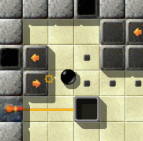
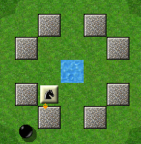

Уровень МесяцаМы хотим каждый месяц больше внимания уделять превосходным уровням. Превосходные уровни это те, у которых средняя оценка пользователей наивысшая и в целом много оценок. Следовательно это Ваш выбор. Поэтому пожалуйста оценивайте уровни, на которых Вы играете и не забывайте присылать Ваши оценки вместе с результатами в конце каждого месяца. Вы можете найти все предыдущие уровни месяца в нашем архиве. April 2008: «The Three Clouds» by Kate LeverThis month we want to honor one of the great levels in Enigma, which sets completely new frontiers in level design and puzzle patterns, giving an impact of similar magnitude as «Island Labyrinth» for game play, «The Aztec Temple» for design and «Houdini» for originality. Still, this heavy packed and atmospherically dense level is accompanied by a fresh and airy look-and-feel, transported by its unique color design and plot. Welcome with us the Level of the Month April 2008: «The Three Clouds»!

Enigma VII # 25 - The Three Clouds
«The Three Clouds» was initially placed at the end of pack Enigma VII, but was lost during the hasty preparations for Enigma 1.01 by an incorrect count of the total level number. Still, it has been manually extracted from the development version by so many gamers, that we just didn't notice that it was missing; we were even able to calculate a user rating for it. We were shocked when we noticed that it was missing. Ironically, this happened while we wrote this article and tried to gather some gamer's comments. This way, we want to apologize for all inconveniences, you can finally download this fabulous level here. Simply save the zip-file to your «USERPATH/levels» directory (then you'll find it in pack «Enigma VII++»), or unzip and move it to your «USERPATH/levels/auto» directory, directory as described here. «I immersed more into its lofty own world each time I played»
When I first saw «The Three Clouds», I thought 'what a crap, is this
maze all I get?', pressed 'F4' and noticed that this was the last level in the
pack. I started to play some other levels of packs VI and VII, and about two
months later came back to «Three Clouds», and somehow thought 'there
must be more'. I rolled through the level, along the coasts of the three
islands, and got immersed more into its lofty own world and heavenly design
each time I played.
I overall admire the phantastic colour design of this
level. This combination of light blue and delicate blueish is the second most
beautiful thing in Enigma's world I've ever seen. I can look at this lovely sight
for hours completely forgetting about the rest of the world, including the mouse
and the marble.
What I like most of this level is its tranquility, static tranquility. There's
no need for a hurry, you can see everything at any time and plan your next step
with care. It's like it's frozen in time, and draws you into this actionfree
world of highly diverse puzzles.

Horsing around
After racing through the first maze of evilly grinning knight guards, you soon arrive at the first real puzzle of this immense level, giving you a new impression on the use of lasers to handle turnstiles and seeds. Time runs, while you push the growing blocks into the T-shaped abyss at the left, but although time is pressing, during the game you actually don't feel pressed at all, the puzzle solves itself in some wierd, not easily explainable way. Of course, you have to retry several times. Playing «The Sargasso Sea» might help you to prepare for this part of the level. After leaving this vividly greenish part of «The Three Clouds» you finally stand at the coast-line of the first 'layer' of this level, on sea-level and three vortices before you. The previously collected hints are now of deep importance, as two of these vortices are merely traps. Quite evil traps, as they simply remove a single stone in the latter five-star-puzzle, making it impossible to solve it. «I was even a little bit angry that this level was absolutely okay»The next you see is the ice-ocean of the second layer, the dexterity part of the level. 
The ice field
I first saw «The Three Clouds» on a screenshot of a friend who plays
Enigma as well. He said, he uses a development version, and gave me a copy this
level. I was amazed to see it, but uncertain whether this was okay, since I
thought it might have some cause when the programmers removed it from the
distribution. However, I played it, got addicted to it, and was even a little
bit angry when I noticed that this level was absolutely okay. I thought, the
programmers were hiding it from me. Now I know better. :-)
I like the idea of several floors in a level. This one makes use of it, and the
second and forth floor are my favorites! Oh, it reminds so much of my first
trials on ice, it makes me cry. I skated a few inches, I hit the ice, I got
floored, I got back on my skates, I skated a few inches, … always standing
up, never giving up. Oh, those were the days.
Indeed, the white flag has been a latter addition to this level, as we noticed it would be too difficult without.
And then the puzzle on the final, fourth floor: Arranging movable death stones
with some it-umbrella, just in time to lead the white marble and the rotor
savely through this newly created maze. I always have to think of another game
I played as a youth, «Praztor II» for the C64. Thank you for waking
up this memory again!
All in all, I think «The Three Clouds» is one of the Top-Ten levels
in Enigma. Many thanks to you, keep on the good work!
Rolling through the second maze, along those ever-changing walls of rotator stones, the dynamics of this wonderfully active level become once again obvious. Reaching the next switch of the thirteen accurately placed switches in this level breaks this level down into single pieces, providing a short rest during the race, which its puzzles are asking for. 
«Let's get outta here …»
The most original puzzle of all might be the absolutely unforeseen twist concerning the it-booze and st-oneway. Although we don't want to spoil too much, I just want to give a small hint: Watch out for the rubberband! ;-) «I'm very fond of the number nine»The final puzzle-maze on the narrow, fifth layer, finally resembles all the ideas hovering through the level at times, and demands all nine tools you were supposed to collect during the game (Make sure not to forget the key, it's of high importance once you leave the mirror area, and you can't get back easily through with the spring). Here are Kate's thoughts on her level and this very particular part of it:
The original idea to «The Three Clouds» arised from a dream I had in
November 2006. It was a relatively scary dream, wood- and death-stones
everywhere, and me in the middle trying to push my way free. Indeed, this
became the inspiration for the death-stone maze, which was the first part I
wrote for this level. Unfortunately, no further dreams helped me to design the
rest of the level, but I soon got inspired during a flight from Seattle to
Miami and wrote most puzzles during the next two days.
Still, I'm not totally satisfied with each aspect of the level.
I struggled with myself for a long time whether I should make use of the key in
the last puzzle. Finally, I decided to do so, particularly to hold the number
of nine tools. I'm very fond of the number nine, as it's my lucky number, and
hope to see my level at position VII/99 in Enigma 1.1.
I was already busy with other things again, when Daydreamer (two months after
transmitting the 'final' version of «The Three Clouds») finally
pointed out some shortcut in the 5-star-puzzle. He used a remaining it-umbrella
to get through the fire to the four-switch, which was solely meant as a
regulative element in the level, not to be manipulated in any way. This was on
the one side the cause for the addition of the second four-switch on this
layer, but also the core-element for the small sokoban which follows the
5-star-puzzle, which was new.
I'm glad I was able to help you people with some level, and glad to see it's
accepted by the gamers as worthwile addition to this otherwise great game.
Thank you for allowing me to be part of it.
And thanks to you, Kate, for this mostly inspiring piece in our puzzle of Enigma's greatest levels, and for the way you make us smile with it! Best greets, |